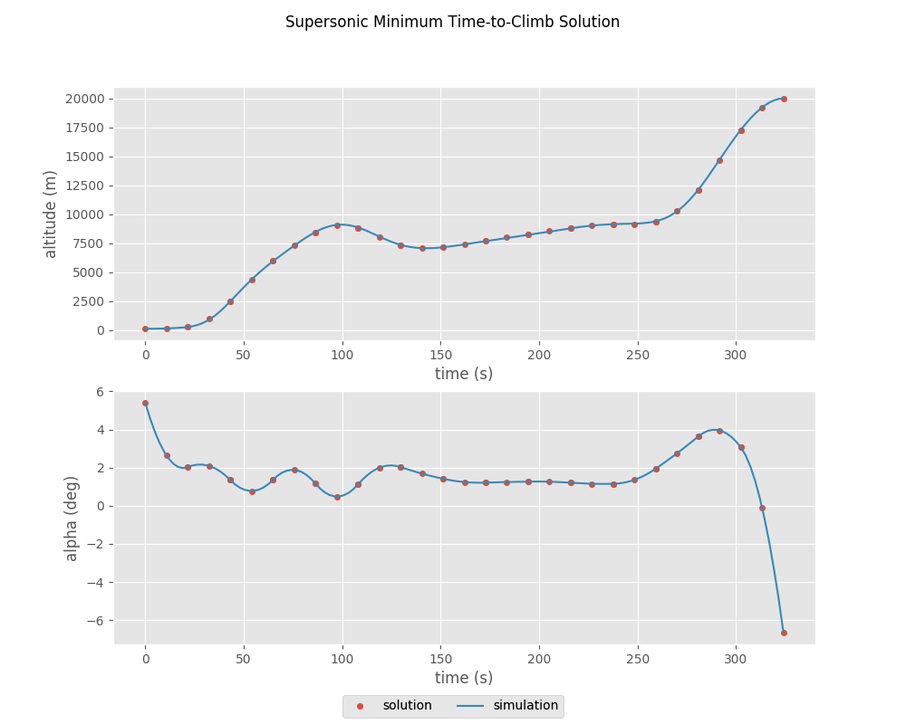

Supersonic Interceptor Minimum Time Climb¶
This example is based on the “A/C Min Time to Climb” example given in chapter 4 of [BrysonDynOpt]. It finds the angle-of-attack history required to accelerate a supersonic interceptor from near ground level, Mach 0.4 to an altitude of 20 km and Mach 1.0.

The vehicle dynamics are given by
\[\begin{split}\frac{d v}{d t} &= \frac{T}{m} \cos(\alpha) - \frac{D}{m} - g \sin(\gamma) \\
\frac{d \gamma}{d t} &= \frac{T}{mv} \sin(\alpha) + \frac{L}{mv} - \frac{g \cos(\gamma)}{v} \\
\frac{d h}{d t} &= v \sin(\gamma) \\
\frac{d r}{d t} &= v \cos(\gamma) \\
\frac{d m}{d t} &= -\frac{T}{g I_{sp}}\end{split}\]
The initial conditions are
\[\begin{split}r_0 &= 0 \, \mathrm{m} \\
h_0 &= 100 \, \mathrm{m} \\
v_0 &= 135.964 \, \mathrm{m/s} \\
\gamma_0 &= 0 \, \mathrm{deg} \\
m_0 &= 19030.468 \, \mathrm{kg}\end{split}\]
and the final conditions are
\[\begin{split}h_f &= 20000 \, \mathrm{m} \\
M_f &= 1.0 \\
\gamma_0 &= 0 \, \mathrm{deg}\end{split}\]
1. The ODE System: min_time_climb_ode.py¶
from __future__ import print_function, division, absolute_import
import openmdao.api as om
from ...models.atmosphere import USatm1976Comp
from .aero import AeroGroup
from .prop import PropGroup
from ...models.eom import FlightPathEOM2D
class MinTimeClimbODE(om.Group):
def initialize(self):
self.options.declare('num_nodes', types=int)
def setup(self):
nn = self.options['num_nodes']
self.add_subsystem(name='atmos',
subsys=USatm1976Comp(num_nodes=nn),
promotes_inputs=['h'])
self.add_subsystem(name='aero',
subsys=AeroGroup(num_nodes=nn),
promotes_inputs=['v', 'alpha', 'S'])
self.connect('atmos.sos', 'aero.sos')
self.connect('atmos.rho', 'aero.rho')
self.add_subsystem(name='prop',
subsys=PropGroup(num_nodes=nn),
promotes_inputs=['h', 'Isp', 'throttle'])
self.connect('aero.mach', 'prop.mach')
self.add_subsystem(name='flight_dynamics',
subsys=FlightPathEOM2D(num_nodes=nn),
promotes_inputs=['m', 'v', 'gam', 'alpha'])
self.connect('aero.f_drag', 'flight_dynamics.D')
self.connect('aero.f_lift', 'flight_dynamics.L')
self.connect('prop.thrust', 'flight_dynamics.T')
2. Building and running the problem¶
In the following code we follow the following process to solve the problem:
import matplotlib.pyplot as plt
import openmdao.api as om
from openmdao.utils.assert_utils import assert_rel_error
import dymos as dm
from dymos.examples.min_time_climb.min_time_climb_ode import MinTimeClimbODE
from dymos.examples.plotting import plot_results
#
# Instantiate the problem and configure the optimization driver
#
p = om.Problem(model=om.Group())
p.driver = om.pyOptSparseDriver()
p.driver.options['optimizer'] = 'SLSQP'
p.driver.declare_coloring()
#
# Instantiate the trajectory and phase
#
traj = dm.Trajectory()
phase = dm.Phase(ode_class=MinTimeClimbODE,
transcription=dm.GaussLobatto(num_segments=15, compressed=True))
traj.add_phase('phase0', phase)
p.model.add_subsystem('traj', traj)
#
# Set the options on the optimization variables
#
phase.set_time_options(fix_initial=True, duration_bounds=(50, 400),
duration_ref=100.0)
phase.add_state('r', fix_initial=True, lower=0, upper=1.0E6,
ref=1.0E3, defect_ref=1.0E3, units='m',
rate_source='flight_dynamics.r_dot')
phase.add_state('h', fix_initial=True, lower=0, upper=20000.0,
ref=1.0E2, defect_ref=1.0E2, units='m',
rate_source='flight_dynamics.h_dot', targets=['h'])
phase.add_state('v', fix_initial=True, lower=10.0,
ref=1.0E2, defect_ref=1.0E2, units='m/s',
rate_source='flight_dynamics.v_dot', targets=['v'])
phase.add_state('gam', fix_initial=True, lower=-1.5, upper=1.5,
ref=1.0, defect_ref=1.0, units='rad',
rate_source='flight_dynamics.gam_dot', targets=['gam'])
phase.add_state('m', fix_initial=True, lower=10.0, upper=1.0E5,
ref=1.0E3, defect_ref=1.0E3, units='kg',
rate_source='prop.m_dot', targets=['m'])
phase.add_control('alpha', units='deg', lower=-8.0, upper=8.0, scaler=1.0,
rate_continuity=True, rate_continuity_scaler=100.0,
rate2_continuity=False, targets=['alpha'])
phase.add_design_parameter('S', val=49.2386, units='m**2', opt=False, targets=['S'])
phase.add_design_parameter('Isp', val=1600.0, units='s', opt=False, targets=['Isp'])
phase.add_design_parameter('throttle', val=1.0, opt=False, targets=['throttle'])
#
# Setup the boundary and path constraints
#
phase.add_boundary_constraint('h', loc='final', equals=20000, scaler=1.0E-3, units='m')
phase.add_boundary_constraint('aero.mach', loc='final', equals=1.0, shape=(1,))
phase.add_boundary_constraint('gam', loc='final', equals=0.0, units='rad')
phase.add_path_constraint(name='h', lower=100.0, upper=20000, ref=20000)
phase.add_path_constraint(name='aero.mach', lower=0.1, upper=1.8, shape=(1,))
# Minimize time at the end of the phase
phase.add_objective('time', loc='final', ref=1.0)
p.model.linear_solver = om.DirectSolver()
#
# Setup the problem and set the initial guess
#
p.setup(check=True)
p['traj.phase0.t_initial'] = 0.0
p['traj.phase0.t_duration'] = 500
p['traj.phase0.states:r'] = phase.interpolate(ys=[0.0, 50000.0], nodes='state_input')
p['traj.phase0.states:h'] = phase.interpolate(ys=[100.0, 20000.0], nodes='state_input')
p['traj.phase0.states:v'] = phase.interpolate(ys=[135.964, 283.159], nodes='state_input')
p['traj.phase0.states:gam'] = phase.interpolate(ys=[0.0, 0.0], nodes='state_input')
p['traj.phase0.states:m'] = phase.interpolate(ys=[19030.468, 10000.], nodes='state_input')
p['traj.phase0.controls:alpha'] = phase.interpolate(ys=[0.0, 0.0], nodes='control_input')
#
# Solve for the optimal trajectory
#
p.run_driver()
#
# Test the results
#
print(p.get_val('traj.phase0.t_duration'))
#
# Get the explicitly simulated solution and plot the results
#
exp_out = traj.simulate()
plot_results([('traj.phase0.timeseries.time', 'traj.phase0.timeseries.states:h',
'time (s)', 'altitude (m)'),
('traj.phase0.timeseries.time', 'traj.phase0.timeseries.controls:alpha',
'time (s)', 'alpha (deg)')],
title='Supersonic Minimum Time-to-Climb Solution',
p_sol=p, p_sim=exp_out)
plt.show()
--------------------------------------------------------------------------
[[16927,1],0]: A high-performance Open MPI point-to-point messaging module
was unable to find any relevant network interfaces:
Module: OpenFabrics (openib)
Host: travis-job-ab17c1a4-76f5-48c0-98e3-5a57a9c20938
Another transport will be used instead, although this may result in
lower performance.
--------------------------------------------------------------------------
WARNING: The Problem has no recorder of any kind attached
Full total jacobian was computed 3 times, taking 0.244865 seconds.
Total jacobian shape: (181, 107)
Jacobian shape: (181, 107) (10.54% nonzero)
FWD solves: 17 REV solves: 2
Total colors vs. total size: 19 vs 107 (82.2% improvement)
Sparsity computed using tolerance: 1e-25
Most common number of nonzero entries (2041 of 19367) repeated 1 times out of 1 tolerances tested.
Time to compute sparsity: 0.244865 sec.
Time to compute coloring: 0.016182 sec.
Optimization Problem -- Optimization using pyOpt_sparse
================================================================================
Objective Function: _objfunc
Solution:
--------------------------------------------------------------------------------
Total Time: 3.2103
User Objective Time : 1.1348
User Sensitivity Time : 1.0380
Interface Time : 0.5736
Opt Solver Time: 0.4639
Calls to Objective Function : 69
Calls to Sens Function : 58
Objectives
Index Name Value Optimum
0 traj.phases.phase0.time.time 3.240596E+02 0.000000E+00
Variables (c - continuous, i - integer, d - discrete)
Index Name Type Lower Bound Value Upper Bound Status
0 traj.phases.phase0.time_extents.t_duration_0 c 5.000000E-01 3.240596E+00 4.000000E+00
1 traj.phases.phase0.indep_states.states:r_0 c 0.000000E+00 4.317541E+00 1.000000E+03
2 traj.phases.phase0.indep_states.states:r_1 c 0.000000E+00 1.027162E+01 1.000000E+03
3 traj.phases.phase0.indep_states.states:r_2 c 0.000000E+00 1.580730E+01 1.000000E+03
4 traj.phases.phase0.indep_states.states:r_3 c 0.000000E+00 2.152520E+01 1.000000E+03
5 traj.phases.phase0.indep_states.states:r_4 c 0.000000E+00 2.789659E+01 1.000000E+03
6 traj.phases.phase0.indep_states.states:r_5 c 0.000000E+00 3.554622E+01 1.000000E+03
7 traj.phases.phase0.indep_states.states:r_6 c 0.000000E+00 4.442262E+01 1.000000E+03
8 traj.phases.phase0.indep_states.states:r_7 c 0.000000E+00 5.372958E+01 1.000000E+03
9 traj.phases.phase0.indep_states.states:r_8 c 0.000000E+00 6.337997E+01 1.000000E+03
10 traj.phases.phase0.indep_states.states:r_9 c 0.000000E+00 7.339986E+01 1.000000E+03
11 traj.phases.phase0.indep_states.states:r_10 c 0.000000E+00 8.386213E+01 1.000000E+03
12 traj.phases.phase0.indep_states.states:r_11 c 0.000000E+00 9.487156E+01 1.000000E+03
13 traj.phases.phase0.indep_states.states:r_12 c 0.000000E+00 1.054312E+02 1.000000E+03
14 traj.phases.phase0.indep_states.states:r_13 c 0.000000E+00 1.130911E+02 1.000000E+03
15 traj.phases.phase0.indep_states.states:r_14 c 0.000000E+00 1.193976E+02 1.000000E+03
16 traj.phases.phase0.indep_states.states:h_0 c 0.000000E+00 2.394552E+00 2.000000E+02
17 traj.phases.phase0.indep_states.states:h_1 c 0.000000E+00 2.497450E+01 2.000000E+02
18 traj.phases.phase0.indep_states.states:h_2 c 0.000000E+00 5.950446E+01 2.000000E+02
19 traj.phases.phase0.indep_states.states:h_3 c 0.000000E+00 8.438858E+01 2.000000E+02
20 traj.phases.phase0.indep_states.states:h_4 c 0.000000E+00 8.823190E+01 2.000000E+02
21 traj.phases.phase0.indep_states.states:h_5 c 0.000000E+00 7.336151E+01 2.000000E+02
22 traj.phases.phase0.indep_states.states:h_6 c 0.000000E+00 7.142787E+01 2.000000E+02
23 traj.phases.phase0.indep_states.states:h_7 c 0.000000E+00 7.709263E+01 2.000000E+02
24 traj.phases.phase0.indep_states.states:h_8 c 0.000000E+00 8.258035E+01 2.000000E+02
25 traj.phases.phase0.indep_states.states:h_9 c 0.000000E+00 8.809606E+01 2.000000E+02
26 traj.phases.phase0.indep_states.states:h_10 c 0.000000E+00 9.128821E+01 2.000000E+02
27 traj.phases.phase0.indep_states.states:h_11 c 0.000000E+00 9.363510E+01 2.000000E+02
28 traj.phases.phase0.indep_states.states:h_12 c 0.000000E+00 1.210604E+02 2.000000E+02
29 traj.phases.phase0.indep_states.states:h_13 c 0.000000E+00 1.727940E+02 2.000000E+02
30 traj.phases.phase0.indep_states.states:h_14 c 0.000000E+00 2.000000E+02 2.000000E+02 u
31 traj.phases.phase0.indep_states.states:v_0 c 1.000000E-01 2.631098E+00 1.000000E+19
32 traj.phases.phase0.indep_states.states:v_1 c 1.000000E-01 3.105393E+00 1.000000E+19
33 traj.phases.phase0.indep_states.states:v_2 c 1.000000E-01 2.949813E+00 1.000000E+19
34 traj.phases.phase0.indep_states.states:v_3 c 1.000000E-01 2.844178E+00 1.000000E+19
35 traj.phases.phase0.indep_states.states:v_4 c 1.000000E-01 3.246652E+00 1.000000E+19
36 traj.phases.phase0.indep_states.states:v_5 c 1.000000E-01 3.935146E+00 1.000000E+19
37 traj.phases.phase0.indep_states.states:v_6 c 1.000000E-01 4.239033E+00 1.000000E+19
38 traj.phases.phase0.indep_states.states:v_7 c 1.000000E-01 4.391242E+00 1.000000E+19
39 traj.phases.phase0.indep_states.states:v_8 c 1.000000E-01 4.558916E+00 1.000000E+19
40 traj.phases.phase0.indep_states.states:v_9 c 1.000000E-01 4.734857E+00 1.000000E+19
41 traj.phases.phase0.indep_states.states:v_10 c 1.000000E-01 4.969291E+00 1.000000E+19
42 traj.phases.phase0.indep_states.states:v_11 c 1.000000E-01 5.191873E+00 1.000000E+19
43 traj.phases.phase0.indep_states.states:v_12 c 1.000000E-01 4.818756E+00 1.000000E+19
44 traj.phases.phase0.indep_states.states:v_13 c 1.000000E-01 3.703693E+00 1.000000E+19
45 traj.phases.phase0.indep_states.states:v_14 c 1.000000E-01 2.950864E+00 1.000000E+19
46 traj.phases.phase0.indep_states.states:gam_0 c -1.500000E+00 9.829321E-02 1.500000E+00
47 traj.phases.phase0.indep_states.states:gam_1 c -1.500000E+00 5.983505E-01 1.500000E+00
48 traj.phases.phase0.indep_states.states:gam_2 c -1.500000E+00 4.575202E-01 1.500000E+00
49 traj.phases.phase0.indep_states.states:gam_3 c -1.500000E+00 3.202720E-01 1.500000E+00
50 traj.phases.phase0.indep_states.states:gam_4 c -1.500000E+00 -1.746361E-01 1.500000E+00
51 traj.phases.phase0.indep_states.states:gam_5 c -1.500000E+00 -1.199476E-01 1.500000E+00
52 traj.phases.phase0.indep_states.states:gam_6 c -1.500000E+00 4.644925E-02 1.500000E+00
53 traj.phases.phase0.indep_states.states:gam_7 c -1.500000E+00 6.028031E-02 1.500000E+00
54 traj.phases.phase0.indep_states.states:gam_8 c -1.500000E+00 5.587618E-02 1.500000E+00
55 traj.phases.phase0.indep_states.states:gam_9 c -1.500000E+00 4.941966E-02 1.500000E+00
56 traj.phases.phase0.indep_states.states:gam_10 c -1.500000E+00 1.038758E-02 1.500000E+00
57 traj.phases.phase0.indep_states.states:gam_11 c -1.500000E+00 7.802248E-02 1.500000E+00
58 traj.phases.phase0.indep_states.states:gam_12 c -1.500000E+00 4.659591E-01 1.500000E+00
59 traj.phases.phase0.indep_states.states:gam_13 c -1.500000E+00 6.280726E-01 1.500000E+00
60 traj.phases.phase0.indep_states.states:gam_14 c -1.500000E+00 -2.173470E-19 1.500000E+00
61 traj.phases.phase0.indep_states.states:m_0 c 1.000000E-02 1.884020E+01 1.000000E+02
62 traj.phases.phase0.indep_states.states:m_1 c 1.000000E-02 1.863610E+01 1.000000E+02
63 traj.phases.phase0.indep_states.states:m_2 c 1.000000E-02 1.847456E+01 1.000000E+02
64 traj.phases.phase0.indep_states.states:m_3 c 1.000000E-02 1.835552E+01 1.000000E+02
65 traj.phases.phase0.indep_states.states:m_4 c 1.000000E-02 1.825259E+01 1.000000E+02
66 traj.phases.phase0.indep_states.states:m_5 c 1.000000E-02 1.811676E+01 1.000000E+02
67 traj.phases.phase0.indep_states.states:m_6 c 1.000000E-02 1.794616E+01 1.000000E+02
68 traj.phases.phase0.indep_states.states:m_7 c 1.000000E-02 1.777077E+01 1.000000E+02
69 traj.phases.phase0.indep_states.states:m_8 c 1.000000E-02 1.759685E+01 1.000000E+02
70 traj.phases.phase0.indep_states.states:m_9 c 1.000000E-02 1.742403E+01 1.000000E+02
71 traj.phases.phase0.indep_states.states:m_10 c 1.000000E-02 1.725053E+01 1.000000E+02
72 traj.phases.phase0.indep_states.states:m_11 c 1.000000E-02 1.707093E+01 1.000000E+02
73 traj.phases.phase0.indep_states.states:m_12 c 1.000000E-02 1.691166E+01 1.000000E+02
74 traj.phases.phase0.indep_states.states:m_13 c 1.000000E-02 1.683651E+01 1.000000E+02
75 traj.phases.phase0.indep_states.states:m_14 c 1.000000E-02 1.681311E+01 1.000000E+02
76 traj.phases.phase0.control_group.indep_controls.controls:alpha_0 c -8.000000E+00 5.419106E+00 8.000000E+00
77 traj.phases.phase0.control_group.indep_controls.controls:alpha_1 c -8.000000E+00 2.640224E+00 8.000000E+00
78 traj.phases.phase0.control_group.indep_controls.controls:alpha_2 c -8.000000E+00 2.026664E+00 8.000000E+00
79 traj.phases.phase0.control_group.indep_controls.controls:alpha_3 c -8.000000E+00 2.091276E+00 8.000000E+00
80 traj.phases.phase0.control_group.indep_controls.controls:alpha_4 c -8.000000E+00 1.346910E+00 8.000000E+00
81 traj.phases.phase0.control_group.indep_controls.controls:alpha_5 c -8.000000E+00 7.735741E-01 8.000000E+00
82 traj.phases.phase0.control_group.indep_controls.controls:alpha_6 c -8.000000E+00 1.351276E+00 8.000000E+00
83 traj.phases.phase0.control_group.indep_controls.controls:alpha_7 c -8.000000E+00 1.881129E+00 8.000000E+00
84 traj.phases.phase0.control_group.indep_controls.controls:alpha_8 c -8.000000E+00 1.164246E+00 8.000000E+00
85 traj.phases.phase0.control_group.indep_controls.controls:alpha_9 c -8.000000E+00 4.822276E-01 8.000000E+00
86 traj.phases.phase0.control_group.indep_controls.controls:alpha_10 c -8.000000E+00 1.116674E+00 8.000000E+00
87 traj.phases.phase0.control_group.indep_controls.controls:alpha_11 c -8.000000E+00 1.991565E+00 8.000000E+00
88 traj.phases.phase0.control_group.indep_controls.controls:alpha_12 c -8.000000E+00 2.030883E+00 8.000000E+00
89 traj.phases.phase0.control_group.indep_controls.controls:alpha_13 c -8.000000E+00 1.687477E+00 8.000000E+00
90 traj.phases.phase0.control_group.indep_controls.controls:alpha_14 c -8.000000E+00 1.414199E+00 8.000000E+00
91 traj.phases.phase0.control_group.indep_controls.controls:alpha_15 c -8.000000E+00 1.244301E+00 8.000000E+00
92 traj.phases.phase0.control_group.indep_controls.controls:alpha_16 c -8.000000E+00 1.211035E+00 8.000000E+00
93 traj.phases.phase0.control_group.indep_controls.controls:alpha_17 c -8.000000E+00 1.242350E+00 8.000000E+00
94 traj.phases.phase0.control_group.indep_controls.controls:alpha_18 c -8.000000E+00 1.266200E+00 8.000000E+00
95 traj.phases.phase0.control_group.indep_controls.controls:alpha_19 c -8.000000E+00 1.261195E+00 8.000000E+00
96 traj.phases.phase0.control_group.indep_controls.controls:alpha_20 c -8.000000E+00 1.205950E+00 8.000000E+00
97 traj.phases.phase0.control_group.indep_controls.controls:alpha_21 c -8.000000E+00 1.151914E+00 8.000000E+00
98 traj.phases.phase0.control_group.indep_controls.controls:alpha_22 c -8.000000E+00 1.150537E+00 8.000000E+00
99 traj.phases.phase0.control_group.indep_controls.controls:alpha_23 c -8.000000E+00 1.361839E+00 8.000000E+00
100 traj.phases.phase0.control_group.indep_controls.controls:alpha_24 c -8.000000E+00 1.945840E+00 8.000000E+00
101 traj.phases.phase0.control_group.indep_controls.controls:alpha_25 c -8.000000E+00 2.754176E+00 8.000000E+00
102 traj.phases.phase0.control_group.indep_controls.controls:alpha_26 c -8.000000E+00 3.638484E+00 8.000000E+00
103 traj.phases.phase0.control_group.indep_controls.controls:alpha_27 c -8.000000E+00 3.955005E+00 8.000000E+00
104 traj.phases.phase0.control_group.indep_controls.controls:alpha_28 c -8.000000E+00 3.059982E+00 8.000000E+00
105 traj.phases.phase0.control_group.indep_controls.controls:alpha_29 c -8.000000E+00 -1.236077E-01 8.000000E+00
106 traj.phases.phase0.control_group.indep_controls.controls:alpha_30 c -8.000000E+00 -6.672787E+00 8.000000E+00
Constraints (i - inequality, e - equality)
Index Name Type Lower Value Upper Status Pi
0 traj.phases.phase0.collocation_constraint.defects:r e 0.000000E+00 2.002662E-09 0.000000E+00 8.00139E-04
1 traj.phases.phase0.collocation_constraint.defects:r e 0.000000E+00 -6.422058E-09 0.000000E+00 8.22383E-04
2 traj.phases.phase0.collocation_constraint.defects:r e 0.000000E+00 2.035583E-08 0.000000E+00 8.06443E-04
3 traj.phases.phase0.collocation_constraint.defects:r e 0.000000E+00 1.530641E-09 0.000000E+00 5.56589E-04
4 traj.phases.phase0.collocation_constraint.defects:r e 0.000000E+00 1.129248E-09 0.000000E+00 1.96725E-04
5 traj.phases.phase0.collocation_constraint.defects:r e 0.000000E+00 1.468126E-11 0.000000E+00 2.74049E-04
6 traj.phases.phase0.collocation_constraint.defects:r e 0.000000E+00 2.035096E-10 0.000000E+00 2.63390E-04
7 traj.phases.phase0.collocation_constraint.defects:r e 0.000000E+00 4.482054E-09 0.000000E+00 1.23009E-04
8 traj.phases.phase0.collocation_constraint.defects:r e 0.000000E+00 2.344688E-09 0.000000E+00 6.03057E-01
9 traj.phases.phase0.collocation_constraint.defects:r e 0.000000E+00 4.374920E-09 0.000000E+00 1.26738E+00
10 traj.phases.phase0.collocation_constraint.defects:r e 0.000000E+00 6.004612E-10 0.000000E+00 2.10168E+00
11 traj.phases.phase0.collocation_constraint.defects:r e 0.000000E+00 2.898239E-10 0.000000E+00 2.13490E+00
12 traj.phases.phase0.collocation_constraint.defects:r e 0.000000E+00 3.096690E-10 0.000000E+00 1.97311E+00
13 traj.phases.phase0.collocation_constraint.defects:r e 0.000000E+00 -7.868586E-10 0.000000E+00 1.76866E+00
14 traj.phases.phase0.collocation_constraint.defects:r e 0.000000E+00 1.572940E-11 0.000000E+00 2.13054E+00
15 traj.phases.phase0.collocation_constraint.defects:h e 0.000000E+00 6.172501E-09 0.000000E+00 1.73535E+01
16 traj.phases.phase0.collocation_constraint.defects:h e 0.000000E+00 2.519442E-07 0.000000E+00 2.94420E+01
17 traj.phases.phase0.collocation_constraint.defects:h e 0.000000E+00 -6.193287E-08 0.000000E+00 5.43926E+01
18 traj.phases.phase0.collocation_constraint.defects:h e 0.000000E+00 6.879398E-09 0.000000E+00 9.05842E+01
19 traj.phases.phase0.collocation_constraint.defects:h e 0.000000E+00 2.143651E-08 0.000000E+00 9.40399E+01
20 traj.phases.phase0.collocation_constraint.defects:h e 0.000000E+00 -1.411926E-08 0.000000E+00 9.44243E+01
21 traj.phases.phase0.collocation_constraint.defects:h e 0.000000E+00 2.279984E-09 0.000000E+00 1.01036E+02
22 traj.phases.phase0.collocation_constraint.defects:h e 0.000000E+00 2.395926E-08 0.000000E+00 5.39440E+01
23 traj.phases.phase0.collocation_constraint.defects:h e 0.000000E+00 1.238896E-08 0.000000E+00 2.95099E+00
24 traj.phases.phase0.collocation_constraint.defects:h e 0.000000E+00 -1.814283E-08 0.000000E+00 5.12407E+00
25 traj.phases.phase0.collocation_constraint.defects:h e 0.000000E+00 1.140607E-09 0.000000E+00 1.68312E+01
26 traj.phases.phase0.collocation_constraint.defects:h e 0.000000E+00 3.985512E-09 0.000000E+00 1.55248E+01
27 traj.phases.phase0.collocation_constraint.defects:h e 0.000000E+00 -6.482680E-09 0.000000E+00 1.68774E+01
28 traj.phases.phase0.collocation_constraint.defects:h e 0.000000E+00 1.230333E-08 0.000000E+00 2.25072E+01
29 traj.phases.phase0.collocation_constraint.defects:h e 0.000000E+00 -1.388653E-08 0.000000E+00 4.10381E+01
30 traj.phases.phase0.collocation_constraint.defects:v e 0.000000E+00 7.171932E-10 0.000000E+00 2.59157E+01
31 traj.phases.phase0.collocation_constraint.defects:v e 0.000000E+00 3.040372E-08 0.000000E+00 2.32529E+01
32 traj.phases.phase0.collocation_constraint.defects:v e 0.000000E+00 1.951402E-08 0.000000E+00 2.00257E+01
33 traj.phases.phase0.collocation_constraint.defects:v e 0.000000E+00 6.785330E-10 0.000000E+00 1.63016E+01
34 traj.phases.phase0.collocation_constraint.defects:v e 0.000000E+00 6.873163E-10 0.000000E+00 1.24351E+01
35 traj.phases.phase0.collocation_constraint.defects:v e 0.000000E+00 3.104882E-10 0.000000E+00 8.45118E+00
36 traj.phases.phase0.collocation_constraint.defects:v e 0.000000E+00 5.949639E-11 0.000000E+00 3.75647E+00
37 traj.phases.phase0.collocation_constraint.defects:v e 0.000000E+00 4.137503E-10 0.000000E+00 1.53206E-01
38 traj.phases.phase0.collocation_constraint.defects:v e 0.000000E+00 3.130705E-09 0.000000E+00 5.93397E-05
39 traj.phases.phase0.collocation_constraint.defects:v e 0.000000E+00 7.643455E-10 0.000000E+00 2.00363E-05
40 traj.phases.phase0.collocation_constraint.defects:v e 0.000000E+00 1.580283E-10 0.000000E+00 3.23624E-05
41 traj.phases.phase0.collocation_constraint.defects:v e 0.000000E+00 4.302260E-10 0.000000E+00 2.28273E-06
42 traj.phases.phase0.collocation_constraint.defects:v e 0.000000E+00 3.663927E-10 0.000000E+00 6.60745E-06
43 traj.phases.phase0.collocation_constraint.defects:v e 0.000000E+00 -9.561674E-11 0.000000E+00 1.51551E-05
44 traj.phases.phase0.collocation_constraint.defects:v e 0.000000E+00 1.813456E-09 0.000000E+00 4.29041E-06
45 traj.phases.phase0.collocation_constraint.defects:gam e 0.000000E+00 3.612554E-10 0.000000E+00 1.89374E+01
46 traj.phases.phase0.collocation_constraint.defects:gam e 0.000000E+00 -2.021950E-08 0.000000E+00 0.00000E+00
47 traj.phases.phase0.collocation_constraint.defects:gam e 0.000000E+00 -4.093630E-09 0.000000E+00 1.67845E+02
48 traj.phases.phase0.collocation_constraint.defects:gam e 0.000000E+00 1.235307E-09 0.000000E+00 0.00000E+00
49 traj.phases.phase0.collocation_constraint.defects:gam e 0.000000E+00 -4.198512E-10 0.000000E+00 0.00000E+00
50 traj.phases.phase0.collocation_constraint.defects:gam e 0.000000E+00 -1.658963E-10 0.000000E+00 0.00000E+00
51 traj.phases.phase0.collocation_constraint.defects:gam e 0.000000E+00 2.003759E-10 0.000000E+00 0.00000E+00
52 traj.phases.phase0.collocation_constraint.defects:gam e 0.000000E+00 -1.574660E-10 0.000000E+00 0.00000E+00
53 traj.phases.phase0.collocation_constraint.defects:gam e 0.000000E+00 -2.540168E-09 0.000000E+00 0.00000E+00
54 traj.phases.phase0.collocation_constraint.defects:gam e 0.000000E+00 6.201309E-11 0.000000E+00 0.00000E+00
55 traj.phases.phase0.collocation_constraint.defects:gam e 0.000000E+00 -2.683281E-11 0.000000E+00 0.00000E+00
56 traj.phases.phase0.collocation_constraint.defects:gam e 0.000000E+00 -1.298583E-10 0.000000E+00 0.00000E+00
57 traj.phases.phase0.collocation_constraint.defects:gam e 0.000000E+00 2.289861E-10 0.000000E+00 0.00000E+00
58 traj.phases.phase0.collocation_constraint.defects:gam e 0.000000E+00 1.324151E-10 0.000000E+00 0.00000E+00
59 traj.phases.phase0.collocation_constraint.defects:gam e 0.000000E+00 -2.998763E-10 0.000000E+00 0.00000E+00
60 traj.phases.phase0.collocation_constraint.defects:m e 0.000000E+00 -1.372201E-11 0.000000E+00 0.00000E+00
61 traj.phases.phase0.collocation_constraint.defects:m e 0.000000E+00 -9.050817E-11 0.000000E+00 0.00000E+00
62 traj.phases.phase0.collocation_constraint.defects:m e 0.000000E+00 -1.816443E-10 0.000000E+00 0.00000E+00
63 traj.phases.phase0.collocation_constraint.defects:m e 0.000000E+00 3.120296E-12 0.000000E+00 0.00000E+00
64 traj.phases.phase0.collocation_constraint.defects:m e 0.000000E+00 2.549653E-11 0.000000E+00 0.00000E+00
65 traj.phases.phase0.collocation_constraint.defects:m e 0.000000E+00 2.606333E-11 0.000000E+00 0.00000E+00
66 traj.phases.phase0.collocation_constraint.defects:m e 0.000000E+00 -8.489620E-13 0.000000E+00 0.00000E+00
67 traj.phases.phase0.collocation_constraint.defects:m e 0.000000E+00 -5.730148E-12 0.000000E+00 0.00000E+00
68 traj.phases.phase0.collocation_constraint.defects:m e 0.000000E+00 -6.995935E-12 0.000000E+00 0.00000E+00
69 traj.phases.phase0.collocation_constraint.defects:m e 0.000000E+00 -1.182576E-11 0.000000E+00 0.00000E+00
70 traj.phases.phase0.collocation_constraint.defects:m e 0.000000E+00 -2.426595E-12 0.000000E+00 0.00000E+00
71 traj.phases.phase0.collocation_constraint.defects:m e 0.000000E+00 -9.397375E-12 0.000000E+00 0.00000E+00
72 traj.phases.phase0.collocation_constraint.defects:m e 0.000000E+00 -3.014061E-12 0.000000E+00 0.00000E+00
73 traj.phases.phase0.collocation_constraint.defects:m e 0.000000E+00 2.287318E-11 0.000000E+00 0.00000E+00
74 traj.phases.phase0.collocation_constraint.defects:m e 0.000000E+00 1.068093E-11 0.000000E+00 0.00000E+00
75 traj.phases.phase0.continuity_comp.defect_control_rates:alpha_rate e 0.000000E+00 -1.236738E-12 0.000000E+00 0.00000E+00
76 traj.phases.phase0.continuity_comp.defect_control_rates:alpha_rate e 0.000000E+00 6.745846E-13 0.000000E+00 0.00000E+00
77 traj.phases.phase0.continuity_comp.defect_control_rates:alpha_rate e 0.000000E+00 1.349169E-12 0.000000E+00 0.00000E+00
78 traj.phases.phase0.continuity_comp.defect_control_rates:alpha_rate e 0.000000E+00 -2.248615E-13 0.000000E+00 0.00000E+00
79 traj.phases.phase0.continuity_comp.defect_control_rates:alpha_rate e 0.000000E+00 0.000000E+00 0.000000E+00 0.00000E+00
80 traj.phases.phase0.continuity_comp.defect_control_rates:alpha_rate e 0.000000E+00 1.574031E-12 0.000000E+00 0.00000E+00
81 traj.phases.phase0.continuity_comp.defect_control_rates:alpha_rate e 0.000000E+00 -1.349169E-12 0.000000E+00 0.00000E+00
82 traj.phases.phase0.continuity_comp.defect_control_rates:alpha_rate e 0.000000E+00 0.000000E+00 0.000000E+00 0.00000E+00
83 traj.phases.phase0.continuity_comp.defect_control_rates:alpha_rate e 0.000000E+00 0.000000E+00 0.000000E+00 0.00000E+00
84 traj.phases.phase0.continuity_comp.defect_control_rates:alpha_rate e 0.000000E+00 0.000000E+00 0.000000E+00 0.00000E+00
85 traj.phases.phase0.continuity_comp.defect_control_rates:alpha_rate e 0.000000E+00 1.271873E-12 0.000000E+00 0.00000E+00
86 traj.phases.phase0.continuity_comp.defect_control_rates:alpha_rate e 0.000000E+00 -2.248615E-13 0.000000E+00 0.00000E+00
87 traj.phases.phase0.continuity_comp.defect_control_rates:alpha_rate e 0.000000E+00 0.000000E+00 0.000000E+00 0.00000E+00
88 traj.phases.phase0.continuity_comp.defect_control_rates:alpha_rate e 0.000000E+00 0.000000E+00 0.000000E+00 0.00000E+00
89 traj.phases.phase0.final_boundary_constraints.final_value:h e 2.000000E+01 2.000000E+01 2.000000E+01 0.00000E+00
90 traj.phases.phase0.final_boundary_constraints.final_value:mach e 1.000000E+00 1.000000E+00 1.000000E+00 0.00000E+00
91 traj.phases.phase0.final_boundary_constraints.final_value:gam e 0.000000E+00 -2.173470E-19 0.000000E+00 0.00000E+00
92 traj.phases.phase0.path_constraints.path:h i 5.000000E-03 5.000000E-03 1.000000E+00 l 0.00000E+00
93 traj.phases.phase0.path_constraints.path:h i 5.000000E-03 5.000000E-03 1.000000E+00 l 0.00000E+00
94 traj.phases.phase0.path_constraints.path:h i 5.000000E-03 1.197276E-02 1.000000E+00 0.00000E+00
95 traj.phases.phase0.path_constraints.path:h i 5.000000E-03 1.197276E-02 1.000000E+00 0.00000E+00
96 traj.phases.phase0.path_constraints.path:h i 5.000000E-03 4.829038E-02 1.000000E+00 0.00000E+00
97 traj.phases.phase0.path_constraints.path:h i 5.000000E-03 1.248725E-01 1.000000E+00 0.00000E+00
98 traj.phases.phase0.path_constraints.path:h i 5.000000E-03 1.248725E-01 1.000000E+00 0.00000E+00
99 traj.phases.phase0.path_constraints.path:h i 5.000000E-03 2.172222E-01 1.000000E+00 0.00000E+00
100 traj.phases.phase0.path_constraints.path:h i 5.000000E-03 2.975223E-01 1.000000E+00 0.00000E+00
101 traj.phases.phase0.path_constraints.path:h i 5.000000E-03 2.975223E-01 1.000000E+00 0.00000E+00
102 traj.phases.phase0.path_constraints.path:h i 5.000000E-03 3.652360E-01 1.000000E+00 0.00000E+00
103 traj.phases.phase0.path_constraints.path:h i 5.000000E-03 4.219429E-01 1.000000E+00 0.00000E+00
104 traj.phases.phase0.path_constraints.path:h i 5.000000E-03 4.219429E-01 1.000000E+00 0.00000E+00
105 traj.phases.phase0.path_constraints.path:h i 5.000000E-03 4.512584E-01 1.000000E+00 0.00000E+00
106 traj.phases.phase0.path_constraints.path:h i 5.000000E-03 4.411595E-01 1.000000E+00 0.00000E+00
107 traj.phases.phase0.path_constraints.path:h i 5.000000E-03 4.411595E-01 1.000000E+00 0.00000E+00
108 traj.phases.phase0.path_constraints.path:h i 5.000000E-03 4.027248E-01 1.000000E+00 0.00000E+00
109 traj.phases.phase0.path_constraints.path:h i 5.000000E-03 3.668076E-01 1.000000E+00 0.00000E+00
110 traj.phases.phase0.path_constraints.path:h i 5.000000E-03 3.668076E-01 1.000000E+00 0.00000E+00
111 traj.phases.phase0.path_constraints.path:h i 5.000000E-03 3.529577E-01 1.000000E+00 0.00000E+00
112 traj.phases.phase0.path_constraints.path:h i 5.000000E-03 3.571394E-01 1.000000E+00 0.00000E+00
113 traj.phases.phase0.path_constraints.path:h i 5.000000E-03 3.571394E-01 1.000000E+00 0.00000E+00
114 traj.phases.phase0.path_constraints.path:h i 5.000000E-03 3.703869E-01 1.000000E+00 0.00000E+00
115 traj.phases.phase0.path_constraints.path:h i 5.000000E-03 3.854631E-01 1.000000E+00 0.00000E+00
116 traj.phases.phase0.path_constraints.path:h i 5.000000E-03 3.854631E-01 1.000000E+00 0.00000E+00
117 traj.phases.phase0.path_constraints.path:h i 5.000000E-03 3.993167E-01 1.000000E+00 0.00000E+00
118 traj.phases.phase0.path_constraints.path:h i 5.000000E-03 4.129018E-01 1.000000E+00 0.00000E+00
119 traj.phases.phase0.path_constraints.path:h i 5.000000E-03 4.129018E-01 1.000000E+00 0.00000E+00
120 traj.phases.phase0.path_constraints.path:h i 5.000000E-03 4.269706E-01 1.000000E+00 0.00000E+00
121 traj.phases.phase0.path_constraints.path:h i 5.000000E-03 4.404803E-01 1.000000E+00 0.00000E+00
122 traj.phases.phase0.path_constraints.path:h i 5.000000E-03 4.404803E-01 1.000000E+00 0.00000E+00
123 traj.phases.phase0.path_constraints.path:h i 5.000000E-03 4.509219E-01 1.000000E+00 0.00000E+00
124 traj.phases.phase0.path_constraints.path:h i 5.000000E-03 4.564410E-01 1.000000E+00 0.00000E+00
125 traj.phases.phase0.path_constraints.path:h i 5.000000E-03 4.564410E-01 1.000000E+00 0.00000E+00
126 traj.phases.phase0.path_constraints.path:h i 5.000000E-03 4.575412E-01 1.000000E+00 0.00000E+00
127 traj.phases.phase0.path_constraints.path:h i 5.000000E-03 4.681755E-01 1.000000E+00 0.00000E+00
128 traj.phases.phase0.path_constraints.path:h i 5.000000E-03 4.681755E-01 1.000000E+00 2.62402E-14
129 traj.phases.phase0.path_constraints.path:h i 5.000000E-03 5.129703E-01 1.000000E+00 0.00000E+00
130 traj.phases.phase0.path_constraints.path:h i 5.000000E-03 6.053019E-01 1.000000E+00 0.00000E+00
131 traj.phases.phase0.path_constraints.path:h i 5.000000E-03 6.053019E-01 1.000000E+00 0.00000E+00
132 traj.phases.phase0.path_constraints.path:h i 5.000000E-03 7.344838E-01 1.000000E+00 0.00000E+00
133 traj.phases.phase0.path_constraints.path:h i 5.000000E-03 8.639701E-01 1.000000E+00 0.00000E+00
134 traj.phases.phase0.path_constraints.path:h i 5.000000E-03 8.639701E-01 1.000000E+00 0.00000E+00
135 traj.phases.phase0.path_constraints.path:h i 5.000000E-03 9.613697E-01 1.000000E+00 0.00000E+00
136 traj.phases.phase0.path_constraints.path:h i 5.000000E-03 1.000000E+00 1.000000E+00 u 7.87941E+01
137 traj.phases.phase0.path_constraints.path:mach i 1.000000E-01 4.000084E-01 1.800000E+00 -5.12478E-03
138 traj.phases.phase0.path_constraints.path:mach i 1.000000E-01 5.894305E-01 1.800000E+00 -8.07043E-03
139 traj.phases.phase0.path_constraints.path:mach i 1.000000E-01 7.752966E-01 1.800000E+00 -5.15653E-04
140 traj.phases.phase0.path_constraints.path:mach i 1.000000E-01 7.752966E-01 1.800000E+00 9.37446E-04
141 traj.phases.phase0.path_constraints.path:mach i 1.000000E-01 9.007367E-01 1.800000E+00 -8.11363E-04
142 traj.phases.phase0.path_constraints.path:mach i 1.000000E-01 9.394262E-01 1.800000E+00 -1.06343E-03
143 traj.phases.phase0.path_constraints.path:mach i 1.000000E-01 9.394262E-01 1.800000E+00 4.09417E-03
144 traj.phases.phase0.path_constraints.path:mach i 1.000000E-01 9.346986E-01 1.800000E+00 -1.95957E-03
145 traj.phases.phase0.path_constraints.path:mach i 1.000000E-01 9.316387E-01 1.800000E+00 -4.10108E-03
146 traj.phases.phase0.path_constraints.path:mach i 1.000000E-01 9.316387E-01 1.800000E+00 -1.28892E-02
147 traj.phases.phase0.path_constraints.path:mach i 1.000000E-01 9.277008E-01 1.800000E+00 -2.18520E-02
148 traj.phases.phase0.path_constraints.path:mach i 1.000000E-01 9.288931E-01 1.800000E+00 -8.86387E-03
149 traj.phases.phase0.path_constraints.path:mach i 1.000000E-01 9.288931E-01 1.800000E+00 6.64969E-03
150 traj.phases.phase0.path_constraints.path:mach i 1.000000E-01 9.731642E-01 1.800000E+00 -3.04231E-02
151 traj.phases.phase0.path_constraints.path:mach i 1.000000E-01 1.066063E+00 1.800000E+00 -3.60381E-03
152 traj.phases.phase0.path_constraints.path:mach i 1.000000E-01 1.066063E+00 1.800000E+00 3.23549E-01
153 traj.phases.phase0.path_constraints.path:mach i 1.000000E-01 1.175639E+00 1.800000E+00 -1.24627E-01
154 traj.phases.phase0.path_constraints.path:mach i 1.000000E-01 1.265899E+00 1.800000E+00 1.86631E-01
155 traj.phases.phase0.path_constraints.path:mach i 1.000000E-01 1.265899E+00 1.800000E+00 1.03726E-01
156 traj.phases.phase0.path_constraints.path:mach i 1.000000E-01 1.323068E+00 1.800000E+00 8.60771E-01
157 traj.phases.phase0.path_constraints.path:mach i 1.000000E-01 1.360107E+00 1.800000E+00 5.85133E-01
158 traj.phases.phase0.path_constraints.path:mach i 1.000000E-01 1.360107E+00 1.800000E+00 -5.35085E-01
159 traj.phases.phase0.path_constraints.path:mach i 1.000000E-01 1.389923E+00 1.800000E+00 -3.80226E-01
160 traj.phases.phase0.path_constraints.path:mach i 1.000000E-01 1.419798E+00 1.800000E+00 1.14756E-01
161 traj.phases.phase0.path_constraints.path:mach i 1.000000E-01 1.419798E+00 1.800000E+00 -3.90194E-01
162 traj.phases.phase0.path_constraints.path:mach i 1.000000E-01 1.451968E+00 1.800000E+00 -7.03391E-01
163 traj.phases.phase0.path_constraints.path:mach i 1.000000E-01 1.485181E+00 1.800000E+00 -9.46518E-01
164 traj.phases.phase0.path_constraints.path:mach i 1.000000E-01 1.485181E+00 1.800000E+00 -2.22521E+00
165 traj.phases.phase0.path_constraints.path:mach i 1.000000E-01 1.518864E+00 1.800000E+00 -1.90079E+00
166 traj.phases.phase0.path_constraints.path:mach i 1.000000E-01 1.554429E+00 1.800000E+00 -1.75026E-01
167 traj.phases.phase0.path_constraints.path:mach i 1.000000E-01 1.554429E+00 1.800000E+00 2.08605E-03
168 traj.phases.phase0.path_constraints.path:mach i 1.000000E-01 1.594275E+00 1.800000E+00 -1.20169E-02
169 traj.phases.phase0.path_constraints.path:mach i 1.000000E-01 1.638773E+00 1.800000E+00 -1.33913E-02
170 traj.phases.phase0.path_constraints.path:mach i 1.000000E-01 1.638773E+00 1.800000E+00 -1.26785E-02
171 traj.phases.phase0.path_constraints.path:mach i 1.000000E-01 1.685039E+00 1.800000E+00 -4.20620E-02
172 traj.phases.phase0.path_constraints.path:mach i 1.000000E-01 1.717911E+00 1.800000E+00 -6.20043E-02
173 traj.phases.phase0.path_constraints.path:mach i 1.000000E-01 1.717911E+00 1.800000E+00 -3.59728E-02
174 traj.phases.phase0.path_constraints.path:mach i 1.000000E-01 1.716061E+00 1.800000E+00 -6.59234E-03
175 traj.phases.phase0.path_constraints.path:mach i 1.000000E-01 1.633126E+00 1.800000E+00 2.26994E-03
176 traj.phases.phase0.path_constraints.path:mach i 1.000000E-01 1.633126E+00 1.800000E+00 3.23574E-03
177 traj.phases.phase0.path_constraints.path:mach i 1.000000E-01 1.457056E+00 1.800000E+00 2.34157E-02
178 traj.phases.phase0.path_constraints.path:mach i 1.000000E-01 1.255220E+00 1.800000E+00 -2.14952E-02
179 traj.phases.phase0.path_constraints.path:mach i 1.000000E-01 1.255220E+00 1.800000E+00 -1.56910E-02
180 traj.phases.phase0.path_constraints.path:mach i 1.000000E-01 1.080865E+00 1.800000E+00 2.80404E-02
181 traj.phases.phase0.path_constraints.path:mach i 1.000000E-01 1.000000E+00 1.800000E+00 -2.30436E-02
--------------------------------------------------------------------------------
[324.05961832]
Simulating trajectory traj
WARNING: The Problem has no recorder of any kind attached
/home/travis/miniconda/envs/PY3.6/lib/python3.6/importlib/_bootstrap.py:219: RuntimeWarning: numpy.ufunc size changed, may indicate binary incompatibility. Expected 192 from C header, got 216 from PyObject
return f(*args, **kwds)
/home/travis/miniconda/envs/PY3.6/lib/python3.6/site-packages/petsc4py/lib/__init__.py:47: DeprecationWarning: the imp module is deprecated in favour of importlib; see the module's documentation for alternative uses
import sys, os, imp, warnings
/home/travis/miniconda/envs/PY3.6/lib/python3.6/importlib/_bootstrap.py:219: RuntimeWarning: numpy.ufunc size changed, may indicate binary incompatibility. Expected 192 from C header, got 216 from PyObject
return f(*args, **kwds)
/home/travis/miniconda/envs/PY3.6/lib/python3.6/site-packages/numpy/lib/type_check.py:546: DeprecationWarning: np.asscalar(a) is deprecated since NumPy v1.16, use a.item() instead
'a.item() instead', DeprecationWarning, stacklevel=1)
Done simulating trajectory traj

References¶
- BrysonDynOpt
Bryson, Arthur Earl. Dynamic optimization. Vol. 1. Prentice Hall, p.172, 1999.